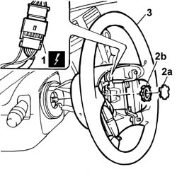
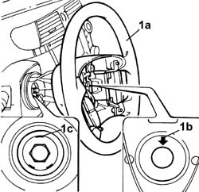

4110A10 STEERING WHEEL - R.R. for replacement or checks
- Path
- Procedures > 41 STEERING > 4110 steering control and linkage > 4110A steering control > 4110A10 STEERING WHEEL - R.R. for replacement or checks
- Kind
- repair procedure (removal / refitting; the operation number is the code)
- Applies to
- all engines; all production periods
- Interactive page
- https://sloeber94.github.io/elrnDB-lThss/en/#/172101
Applies to: all engines; all production periods
 Removing
Removing
 Refitting
Refitting- Open the boot and disconnect the negative battery terminal.
- Position the steering wheel so that the wheels are as parallel as possible to the longitudinal axis of the vehicle.
See in Op. 5580C18 AIR BAG MODULE - R.R.
1. Disconnect the coupling between the clock spring and the steering wheel controls.
2. Remove the cap (2a) covering the fixing nut and undo the fixing nut (2b).
3. Remove the steering wheel.

Applies to: all engines; all production periods
Refitting
Removing1. Fit the steering wheel (1a) on the steering column so that the reference on the steering wheel hub (1b) and the one of the steering column (1c) are aligned.

Applies to: all engines; all production periods
- Tighten the steering wheel fixing nut to the recommended torque and press-fit the covering cap.
 | Value - daNm | Fastening | Component | Ø |
|---|---|---|---|---|
. | 5.0 | Nut | STEERING WHEEL | M16x1,5 |
- Connect the coupling between the clock spring and the steering wheel controls.
See in Op. 5580C18 AIR BAG MODULE - R.R.
- Connect the negative battery terminal.
Topics linked from this page (1)
Topics that link to this page (18)
- 3330B02 PEDAL ASSEMBLY - R.R.
- 3330B16 PEDAL assembly - dismantling and repairing at the bench
- 4110A30 Support with steering control shafts - R.R.
- 5010B56 Duct between climate control casing and air duct to rear seats - R.R.
- 5010D27 UPPER MIXED AIR TEMPERATURE SENSOR (one) left or right - R.R. following electrical circuit check
- 5010D28 LOWER MIXED AIR TEMPERATURE SENSOR (one) left or right - R.R. following electrical circuit check
- 5040C10 Air conditioning CASING - R.R.
- 5040D86 air conditioner right air mixture flap control motor - r r
- 5040D94 Air conditioning upper left air distribution flap control motor (DEFROST) - R.R.
- 5040D96 Air conditioning upper right air distribution flap control motor (DEFROST) - R.R.
- 5505C26 ENGINE COMPARTMENT built in wiring - R.R.
- 5505C31 Under-FACIA WIRING - R.R.
- 5505C41 PASSENGER COMPARTMENT built in WIRING - R.R.
- 5550A10 stalk unit assembly - r+r
- 5560B11 ANALOGUE CONTROL PANEL - R.R. or Replace
- 7040A10 Instrument facia TRIM - R.R.
- 7040A95 Left or right reinforcement crossmember (one), dashboard and bodyshell supporting crossmember - R.R.
- 7040L17 Passenger compartment front floor carpet - R.R.